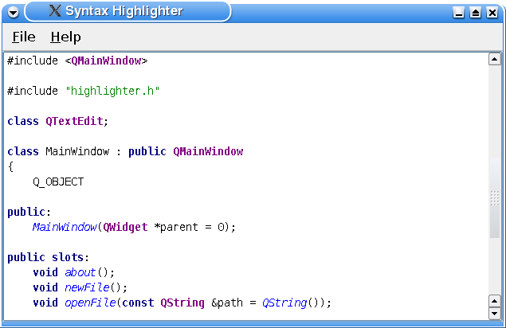

Syntax Highlighter Example
The Syntax Highlighter example shows how to perform simple syntax highlighting.

The Syntax Highlighter application displays C++ files with custom syntax highlighting.
The example consists of two classes:
- The
Highlighterclass defines and applies the highlighting rules. - The
MainWindowwidget is the application's main window.
We will first review the Highlighter class to see how you can customize the QSyntaxHighlighter class to fit your preferences, then we will take a look at the relevant parts of the MainWindow class to see how you can use your custom highlighter class in an application.
Highlighter Class Definition
class Highlighter : public QSyntaxHighlighter { Q_OBJECT public: Highlighter(QTextDocument *parent = 0); protected: void highlightBlock(const QString &text) override; private: struct HighlightingRule { QRegularExpression pattern; QTextCharFormat format; }; QVector<HighlightingRule> highlightingRules; QRegularExpression commentStartExpression; QRegularExpression commentEndExpression; QTextCharFormat keywordFormat; QTextCharFormat classFormat; QTextCharFormat singleLineCommentFormat; QTextCharFormat multiLineCommentFormat; QTextCharFormat quotationFormat; QTextCharFormat functionFormat; };
To provide your own syntax highlighting, you must subclass QSyntaxHighlighter, reimplement the highlightBlock() function, and define your own highlighting rules.
We have chosen to store our highlighting rules using a private struct: A rule consists of a QRegularExpression pattern and a QTextCharFormat instance. The various rules are then stored using a QVector.
The QTextCharFormat class provides formatting information for characters in a QTextDocument specifying the visual properties of the text, as well as information about its role in a hypertext document. In this example, we will only define the font weight and color using the QTextCharFormat::setFontWeight() and QTextCharFormat::setForeground() functions.
Highlighter Class Implementation
When subclassing the QSyntaxHighlighter class you must pass the parent parameter to the base class constructor. The parent is the text document upon which the syntax highlighting will be applied. In this example, we have also chosen to define our highlighting rules in the constructor:
Highlighter::Highlighter(QTextDocument *parent) : QSyntaxHighlighter(parent) { HighlightingRule rule; keywordFormat.setForeground(Qt::darkBlue); keywordFormat.setFontWeight(QFont::Bold); const QString keywordPatterns[] = { QStringLiteral("\\bchar\\b"), QStringLiteral("\\bclass\\b"), QStringLiteral("\\bconst\\b"), QStringLiteral("\\bdouble\\b"), QStringLiteral("\\benum\\b"), QStringLiteral("\\bexplicit\\b"), QStringLiteral("\\bfriend\\b"), QStringLiteral("\\binline\\b"), QStringLiteral("\\bint\\b"), QStringLiteral("\\blong\\b"), QStringLiteral("\\bnamespace\\b"), QStringLiteral("\\boperator\\b"), QStringLiteral("\\bprivate\\b"), QStringLiteral("\\bprotected\\b"), QStringLiteral("\\bpublic\\b"), QStringLiteral("\\bshort\\b"), QStringLiteral("\\bsignals\\b"), QStringLiteral("\\bsigned\\b"), QStringLiteral("\\bslots\\b"), QStringLiteral("\\bstatic\\b"), QStringLiteral("\\bstruct\\b"), QStringLiteral("\\btemplate\\b"), QStringLiteral("\\btypedef\\b"), QStringLiteral("\\btypename\\b"), QStringLiteral("\\bunion\\b"), QStringLiteral("\\bunsigned\\b"), QStringLiteral("\\bvirtual\\b"), QStringLiteral("\\bvoid\\b"), QStringLiteral("\\bvolatile\\b"), QStringLiteral("\\bbool\\b") }; for (const QString &pattern : keywordPatterns) { rule.pattern = QRegularExpression(pattern); rule.format = keywordFormat; highlightingRules.append(rule); }
First we define a keyword rule which recognizes the most common C++ keywords. We give the keywordFormat a bold, dark blue font. For each keyword, we assign the keyword and the specified format to a HighlightingRule object and append the object to our list of rules.
classFormat.setFontWeight(QFont::Bold);
classFormat.setForeground(Qt::darkMagenta);
rule.pattern = QRegularExpression(QStringLiteral("\\bQ[A-Za-z]+\\b"));
rule.format = classFormat;
highlightingRules.append(rule);
quotationFormat.setForeground(Qt::darkGreen);
rule.pattern = QRegularExpression(QStringLiteral("\".*\""));
rule.format = quotationFormat;
highlightingRules.append(rule);
functionFormat.setFontItalic(true);
functionFormat.setForeground(Qt::blue);
rule.pattern = QRegularExpression(QStringLiteral("\\b[A-Za-z0-9_]+(?=\\()"));
rule.format = functionFormat;
highlightingRules.append(rule);
Then we create a format that we will apply to Qt class names. The class names will be rendered with a dark magenta color and a bold style. We specify a string pattern that is actually a regular expression capturing all Qt class names. Then we assign the regular expression and the specified format to a HighlightingRule object and append the object to our list of rules.
We also define highlighting rules for quotations and functions using the same approach: The patterns have the form of regular expressions and are stored in HighlightingRule objects with the associated format.
singleLineCommentFormat.setForeground(Qt::red);
rule.pattern = QRegularExpression(QStringLiteral("//[^\n]*"));
rule.format = singleLineCommentFormat;
highlightingRules.append(rule);
multiLineCommentFormat.setForeground(Qt::red);
commentStartExpression = QRegularExpression(QStringLiteral("/\\*"));
commentEndExpression = QRegularExpression(QStringLiteral("\\*/"));
}
The C++ language has two variations of comments: The single line comment (//) and the multiline comment (/*...*/). The single line comment can easily be defined through a highlighting rule similar to the previous ones. But the multiline comment needs special care due to the design of the QSyntaxHighlighter class.
After a QSyntaxHighlighter object is created, its highlightBlock() function will be called automatically whenever it is necessary by the rich text engine, highlighting the given text block. The problem appears when a comment spans several text blocks. We will take a closer look at how this problem can be solved when reviewing the implementation of the Highlighter::highlightBlock() function. At this point we only specify the multiline comment's color.
void Highlighter::highlightBlock(const QString &text) { for (const HighlightingRule &rule : qAsConst(highlightingRules)) { QRegularExpressionMatchIterator matchIterator = rule.pattern.globalMatch(text); while (matchIterator.hasNext()) { QRegularExpressionMatch match = matchIterator.next(); setFormat(match.capturedStart(), match.capturedLength(), rule.format); } }
The highlightBlock() function is called automatically whenever it is necessary by the rich text engine, i.e. when there are text blocks that have changed.
First we apply the syntax highlighting rules that we stored in the highlightingRules vector. For each rule (i.e. for each HighlightingRule object) we search for the pattern in the given text block using the QString::indexOf() function. When the first occurrence of the pattern is found, we use the QRegularExpressionMatch::capturedLength() function to determine the string that will be formatted. QRegularExpressionMatch::capturedLength() returns the length of the last matched string, or 0 if there was no match.
To perform the actual formatting the QSyntaxHighlighter class provides the setFormat() function. This function operates on the text block that is passed as argument to the highlightBlock() function. The specified format is applied to the text from the given start position for the given length. The formatting properties set in the given format are merged at display time with the formatting information stored directly in the document. Note that the document itself remains unmodified by the format set through this function.
This process is repeated until the last occurrence of the pattern in the current text block is found.
setCurrentBlockState(0);
To deal with constructs that can span several text blocks (like the C++ multiline comment), it is necessary to know the end state of the previous text block (e.g. "in comment"). Inside your highlightBlock() implementation you can query the end state of the previous text block using the QSyntaxHighlighter::previousBlockState() function. After parsing the block you can save the last state using QSyntaxHighlighter::setCurrentBlockState().
The previousBlockState() function return an int value. If no state is set, the returned value is -1. You can designate any other value to identify any given state using the setCurrentBlockState() function. Once the state is set, the QTextBlock keeps that value until it is set again or until the corresponding paragraph of text is deleted.
In this example we have chosen to use 0 to represent the "not in comment" state, and 1 for the "in comment" state. When the stored syntax highlighting rules are applied we initialize the current block state to 0.
int startIndex = 0;
if (previousBlockState() != 1)
startIndex = text.indexOf(commentStartExpression);
If the previous block state was "in comment" (previousBlockState() == 1), we start the search for an end expression at the beginning of the text block. If the previousBlockState() returns 0, we start the search at the location of the first occurrence of a start expression.
while (startIndex >= 0) {
QRegularExpressionMatch match = commentEndExpression.match(text, startIndex);
int endIndex = match.capturedStart();
int commentLength = 0;
if (endIndex == -1) {
setCurrentBlockState(1);
commentLength = text.length() - startIndex;
} else {
commentLength = endIndex - startIndex
+ match.capturedLength();
}
setFormat(startIndex, commentLength, multiLineCommentFormat);
startIndex = text.indexOf(commentStartExpression, startIndex + commentLength);
}
}
When an end expression is found, we calculate the length of the comment and apply the multiline comment format. Then we search for the next occurrence of the start expression and repeat the process. If no end expression can be found in the current text block we set the current block state to 1, i.e. "in comment".
This completes the Highlighter class implementation; it is now ready for use.
MainWindow Class Definition
Using a QSyntaxHighlighter subclass is simple; just provide your application with an instance of the class and pass it the document upon which you want the highlighting to be applied.
class MainWindow : public QMainWindow { Q_OBJECT public: MainWindow(QWidget *parent = 0); public slots: void about(); void newFile(); void openFile(const QString &path = QString()); private: void setupEditor(); void setupFileMenu(); void setupHelpMenu(); QTextEdit *editor; Highlighter *highlighter; };
In this example we declare a pointer to a Highlighter instance which we later will initialize in the private setupEditor() function.
MainWindow Class Implementation
The constructor of the main window is straight forward. We first set up the menus, then we initialize the editor and make it the central widget of the application. Finally we set the main window's title.
MainWindow::MainWindow(QWidget *parent) : QMainWindow(parent) { setupFileMenu(); setupHelpMenu(); setupEditor(); setCentralWidget(editor); setWindowTitle(tr("Syntax Highlighter")); }
We initialize and install the Highlighter object in the private setupEditor() convenience function:
void MainWindow::setupEditor() { QFont font; font.setFamily("Courier"); font.setFixedPitch(true); font.setPointSize(10); editor = new QTextEdit; editor->setFont(font); highlighter = new Highlighter(editor->document()); QFile file("mainwindow.h"); if (file.open(QFile::ReadOnly | QFile::Text)) editor->setPlainText(file.readAll()); }
First we create the font we want to use in the editor, then we create the editor itself which is an instance of the QTextEdit class. Before we initialize the editor with the MainWindow class definition file, we create a Highlighter instance passing the editor's document as argument. This is the document that the highlighting will be applied to. Then we are done.
A QSyntaxHighlighter object can only be installed on one document at the time, but you can easily reinstall the highlighter on another document using the QSyntaxHighlighter::setDocument() function. The QSyntaxHighlighter class also provides the document() function which returns the currently set document.
Other Code Editor Features
It is possible to implement parenthesis matching with QSyntaxHighlighter. The "Matching Parentheses with QSyntaxHighlighter" article in Qt Quarterly 31 (http://doc.qt.io/archives/qq/) implements this. We also have the Code Editor Example, which shows how to implement line numbers and how to highlight the current line.